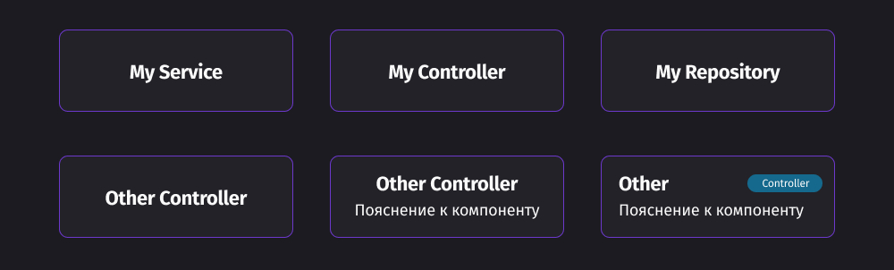

Компоненты
В первую очередь давайте перечислим все возможные блоки, которые могут использоваться в диаграмме:
- Приложения - отделимые приложения для описания микросервисного подхода.
- Модули - объединяют компоненты.
- Компоненты - основные строительные блоки приложения.
- Внутренние связи между компонентами - обозначение связей между компонентами.
- Внешние связи - с другими системами или между микросервисами.
- Передаваемые объекты - между компонентами системы или вне
- Детализация полей, которые могут быть детальным описанием свойств, методов и структуры данных.
Фактически все, что вы можете выделить в виде класса с инкапсулированной логикой - это компонент.
Для того чтобы максимально полно описать компонент можно указать следующие параметры:
- Имя - название компонента, отражающие его суть или даже название класса
- Тип - чтобы понять что это контроллер или репозиторий
- Пояснение - если требуется дополнительное описание.
Примеры:
